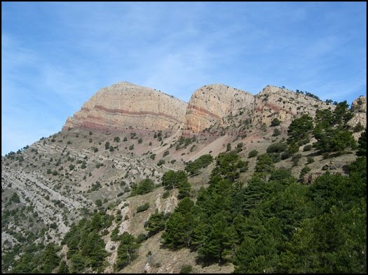
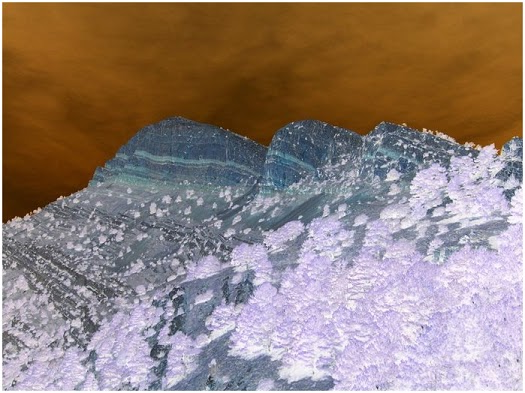

Ficheros de imagen¶
Dónde guardar los ejemplos
Programa los ejemplos en el proyecto Ficheros, dentro del paquete contenido. Guarda las imágenes de trabajo en documentos, en la raíz del proyecto.
Consulta 🧰 Entorno y ubicación de los ejemplos si necesitas revisar la estructura completa.
Los ficheros de imagen contienen datos que representan gráficamente una imagen visual (fotografías, ilustraciones, iconos, etc.). A diferencia de los ficheros de texto o binarios crudos, estos archivos tienen estructura interna que depende del formato (como .png, .jpg, .bmp, etc.).
📦 Formatos más comunes
- .jpg: Comprimido con pérdida, ideal para fotos
- .png: Comprimido sin pérdida, soporta transparencia
- .bmp: Sin compresión, ocupa más espacio
- .gif: Admite animaciones simples, limitada a 256 colores
En la plataforma Java (y por tanto en Kotlin), el manejo de imágenes se hace generalmente usando:
- ImageIO: para leer y escribir imágenes
- BufferedImage: para acceder y modificar píxeles
| Tipo de fichero | Lectura | Escritura | Comentario |
|---|---|---|---|
| Imagen | ImageIO.read(Path/File) |
ImageIO.write(BufferedImage, ...) |
Usa javax.imageio.ImageIO |
🖥️ Ejemplo_generar_imagen.kt: genera una imagen de ejemplo.
Este ejemplo muestra cómo crear una imagen desde cero en Kotlin, asignando un color a cada píxel y guardando después el resultado en un fichero PNG.
La finalidad del ejercicio es comprender que una imagen digital puede construirse manipulando directamente sus píxeles y que BufferedImage e ImageIO son las clases básicas para trabajar con imágenes en Java y Kotlin.
import java.awt.Color
import java.awt.image.BufferedImage
import java.io.File
import javax.imageio.ImageIO
fun main() {
val ancho = 200
val alto = 100
val imagen = BufferedImage(ancho, alto, BufferedImage.TYPE_INT_RGB) // (1)!
for (x in 0 until ancho) {
for (y in 0 until alto) {
val rojo = (x * 255) / ancho
val verde = (y * 255) / alto
val azul = 128
val color = Color(rojo, verde, azul) // (2)!
imagen.setRGB(x, y, color.rgb) // (3)!
}
}
val archivo = File("documentos/imagen_generada.png") // (4)!
ImageIO.write(imagen, "png", archivo) // (5)!
println("✅ Imagen generada correctamente: ${archivo.absolutePath}")
}
- Crea una imagen RGB en memoria.
- Construye el color de cada pixel.
- Escribe el color en la coordenada
(x, y). - Define el fichero de salida.
- Codifica y guarda la imagen en formato PNG.
🖥️ Ejemplo_invertircolores_imagen.kt: invierte los colores de la imagen generada en el ejemplo anterior.
Este ejemplo parte de una imagen ya existente, la recorre píxel a píxel y genera una nueva versión con los colores invertidos.
La finalidad del ejercicio es entender cómo se puede transformar una imagen manipulando directamente los valores de color de cada píxel.
import java.awt.Color
import java.awt.image.BufferedImage
import java.io.File
import javax.imageio.ImageIO
fun main() {
val archivoEntrada = File("documentos/imagen_generada.png") // (1)!
val archivoSalida = File("documentos/imagen_salida.png") // (2)!
val imagen: BufferedImage = ImageIO.read(archivoEntrada) // (3)!
for (x in 0 until imagen.width) {
for (y in 0 until imagen.height) {
val colorOriginal = Color(imagen.getRGB(x, y)) // (4)!
val colorInvertido = Color( // (5)!
255 - colorOriginal.red,
255 - colorOriginal.green,
255 - colorOriginal.blue
)
imagen.setRGB(x, y, colorInvertido.rgb) // (6)!
}
}
ImageIO.write(imagen, "png", archivoSalida) // (7)!
println("✅ Imagen guardada como ${archivoSalida.name}")
}
- Define el archivo de entrada.
- Define el archivo de salida.
- Carga la imagen en un
BufferedImage. - Lee el color del pixel actual.
- Calcula el color invertido en RGB.
- Escribe el nuevo color en la imagen.
- Guarda la imagen transformada.
🖥️ Ejemplo_img_penyagolosa.kt: Invierte los colores de una imagen.
Este ejemplo aplica el trabajo con imágenes a un caso más real: partir de un archivo existente, hacer una copia de seguridad y generar otra versión con los colores invertidos.
La finalidad del ejercicio es combinar operaciones sobre ficheros e imágenes: comprobar existencia, copiar archivos y modificar píxeles para obtener una nueva imagen a partir de otra ya existente.
Copia la imagen penyagolosa.png en la carpeta documentos
| imagen a copiar (penyagolosa.png) | imagen con los colores invertidos |
|---|---|
 |
 |
import java.awt.Color
import java.awt.image.BufferedImage
import java.nio.file.Files
import java.nio.file.Path
import java.nio.file.StandardCopyOption
import javax.imageio.ImageIO
fun main() {
val originalPath = Path.of("documentos/penyagolosa.png") // (1)!
val copiaPath = Path.of("documentos/penyagolosa_copia.png") // (2)!
val modificadaPath = Path.of("documentos/penyagolosa_modificada.png") // (3)!
if (!Files.exists(originalPath)) { // (4)!
println("No se encuentra la imagen original: $originalPath")
return
}
Files.copy(originalPath, copiaPath, StandardCopyOption.REPLACE_EXISTING) // (5)!
println("Imagen copiada a: $copiaPath")
val imagen: BufferedImage = ImageIO.read(copiaPath.toFile()) // (6)!
for (x in 0 until imagen.width) {
for (y in 0 until imagen.height) {
val color = Color(imagen.getRGB(x, y)) // (7)!
val invertido = Color(255 - color.red, 255 - color.green, 255 - color.blue) // (8)!
imagen.setRGB(x, y, invertido.rgb) // (9)!
}
}
ImageIO.write(imagen, "png", modificadaPath.toFile()) // (10)!
println("Imagen modificada guardada como: $modificadaPath")
}
- Define ruta de imagen original.
- Define ruta para la copia de seguridad.
- Define ruta de imagen modificada.
- Verifica existencia del archivo original.
- Copia la imagen con opcion de sobrescritura.
- Carga la copia en memoria como
BufferedImage. - Lee el color de cada pixel.
- Calcula el color invertido.
- Guarda el pixel transformado.
- Escribe el resultado final en disco.
🧠 Comprueba tu comprensión
Si quieres conservar la imagen original y generar una versión modificada con los colores invertidos, ¿qué pasos deberías seguir y por qué no conviene sobrescribir directamente el archivo original?
Ver respuesta
- Comprobar que la imagen original existe.
- Crear una copia de seguridad del fichero (por ejemplo, con
Files.copy(...)). - Leer la copia con
ImageIO.read(...)y convertirla enBufferedImage. - Recorrer los píxeles y aplicar la transformación de color.
- Guardar el resultado en un archivo nuevo con
ImageIO.write(...).
No conviene sobrescribir directamente el original porque perderías la versión inicial y no podrías recuperar fácilmente el estado anterior en caso de error o de querer comparar resultados.